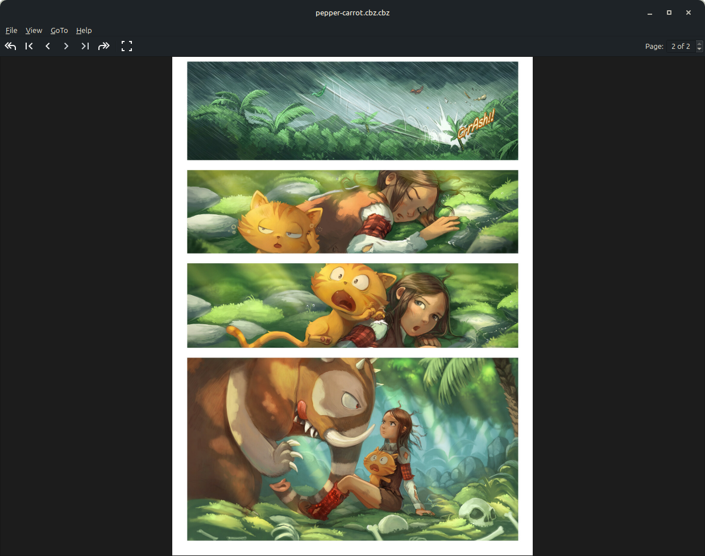

Pynocchio
A minimalist comic reader
Supports several view adjustment modes with anti-aliasing.
Compatible with multiple image formats supported: WEBP, JPG,
JPEG, PNG, GIF, BMP, PBM, PGM, PPM, XBM, XPM.
Compatible with PFD comic files.
Supports various comic archive formats: .ZIP, .RAR,
.TAR, .CBT, .CBR, .CBZ.
Supports multiple comic reading modes: vertical, horizontal,
and page flipping.
Minimalist design, free, and easy to use!
We work with world's top companies to create beautiful products &
apps.

This screenshot contains a page of the webcomic Pepper&Carrot by David Revoy, licensed under the Creative Commons Attribution 4.0 International (CC BY 4.0).